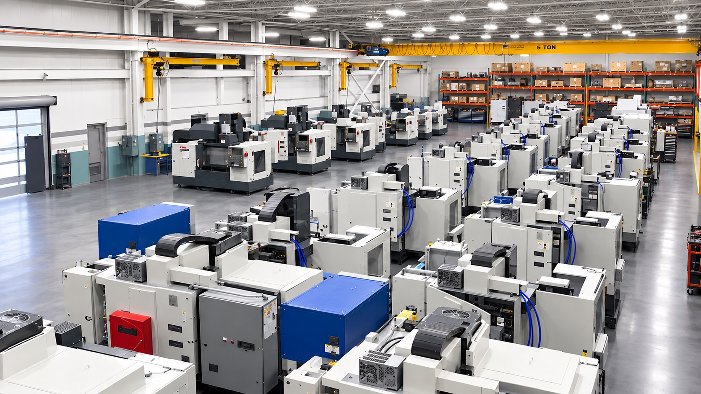
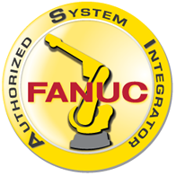

Any make, any control — we engineer to your existing equipment

Why Manufacturers Trust Gerotech
Every manufacturing operation is unique. That's why our engineers don't start with a standard solution—they start by understanding your process. We work alongside your team to solve manufacturing challenges and develop practical solutions built around your operation.
Get A QuoteMachine Custom Solutions
Column risers, auto doors, hydraulics, sheet metal, custom workholding, and specialty builds — we modify and customize your equipment to meet new production demands.
Explore Machine Custom Solutions →Applications
Part programming, process troubleshooting, optimization, tooling recommendations, demos, and training — we help you get the most from your existing equipment.
Explore Applications →Automation controls solutions
Electrical controls, HMI design, layered systems, full automation cell design, EOAT, and pre-engineered packages — complete integration from concept to production.
Explore Automation Controls Solutions →
FANUC Authorized System Integrator
Factory-Trained Robotics Integration — Certified by FANUC
Gerotech is a FANUC Authorized System Integrator (ASI) — one of a select group of companies certified to design, build, and support complete FANUC robotic automation systems. That means factory-trained engineers, direct FANUC technical support, and proven cell methodology on every project.
- Factory-trained FANUC robotics engineers on staff
- Direct access to FANUC technical resources
- Complete cell design, integration, and production support
Our Technology Ecosystem
The Right Technology for Every Application
Beyond our FANUC ASI credential, we work with leading automation and controls manufacturers to source the right components for every solution — engineering judgment matched to your application, not brand allegiance.
Explore CapabilitiesFANUC
Haas
Midaco
OnRobot
Renishaw
Keyence
Dynatect
Royal Products
5th Axis
Beyond a Single Brand
Your Machine.
Our Solution.
Whatever sits on your floor, any make and any control, our engineers modify, customize, and automate around it.
In-house design, programming, and integration
From a single modification to a full automation cell
Common Questions
Do you work on machines from brands other than Haas?
Yes. Our engineering team modifies, retrofits, and automates equipment from any OEM and any control platform — not just the machines we sell.
Can Gerotech handle design through installation in-house?
We provide concept development, electrical and mechanical design, controls programming, panel build, on-site commissioning, and production support — all under one roof in Michigan.
How quickly can your service team respond to downtime?
Factory-trained technicians at three Michigan locations support same-day response for critical production issues. Call the Service line for immediate dispatch.
What does FANUC Authorized System Integrator mean for my project?
It certifies that Gerotech meets FANUC's standards for robotic cell design, integration methodology, and ongoing support — with direct access to FANUC technical resources.
Do you offer training for operators and programmers?
Yes. Complimentary Haas operator and programming courses run at Gerotech-supported locations, including Macomb Community College. Custom on-site training is also available.
Stay Informed
Latest Projects & News

Automated Robotic Cell Delivered to a Tier-1 Automotive Supplier
Gerotech engineers designed and integrated a complete FANUC robotic automation cell, reducing cycle times by 38% for a major Michigan supplier.
- 38% Cycle-time reduction
- FANUC Integration partner
- Turnkey Cell delivery
Gerotech Expands Grand Rapids Service Territory
Our Grand Rapids office is now fully staffed with factory-trained service technicians serving manufacturers across West Michigan.

Hydraulic Workholding System Installed on Legacy Okuma
A custom hydraulic workholding and auto-door system extended a legacy machining center's productive life by years.

Spring Haas Operator Sessions Open at Macomb
Complimentary operator and programming courses return to Macomb Community College for Haas owners across Southeast Michigan.


Engineered Solutions
Engineering Solutions Built Around Your Operation
Whether you're automating a manual process, modifying existing equipment, integrating robotics, or developing a custom manufacturing solution, our engineering team is ready to help. Tell us about your application, and we'll work with you to develop a practical solution built around your operation.
Join Our Mailing List
Projects, machine updates, and service news — delivered to your inbox.